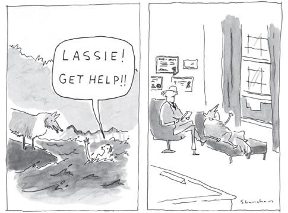

“Although many of us may think of ourselves as thinking creatures that feel, biologically we are feeling creatures that think.”
—Dr. Jill Bolte Taylor, Neuroscientist
In our society we undervalue emotion. It’s often viewed as a nuisance. Words are frequently applied to it like “sappy,” “mushy,” or “schmaltzy.” Emotion is often thought of as childish, effeminate or weak. It’s considered the antithesis of thought. We have a tendency to assume that smart people aren’t emotional people, and emotional people aren’t smart. The reality is that the smartest people are those who use their emotions to help them think and who use their thoughts to manage their emotions. The key is to use emotion in a healthy balanced way. Listen to what your feeling is telling you, and then figure out a way to act upon it to better your situation, your life, or the world around you. Many of the most valuable scientific discoveries were made because a scientist was passionate about his or her subject. The scientist’s passion might be driven by grief, for example, or by a wish to discover a way to help a loved one who’s suffering. But most successful people are driven by feeling.
Neuroscientists have studied extensively the evolutionary development of the human brain. For humans, the ability to feel emotion evolved millions of years before the ability to think. Human emotions originate in the limbic system, which is buried deep below the cerebral cortex, the section of the brain where thought originates. In this way, our feelings are a more basic part of who we are than are our thoughts. They’re a physiological part of our bodies, like fingernails or knees. Our emotions cannot be erased and will not be denied, any more than we can erase or deny our hunger or thirst, our elbows or our earlobes.
Why did emotion evolve in the first place? Sometimes, especially to emotionally neglected people, emotions feel like a burden. Wouldn’t it be better if we didn’t have to feel sad when we had a conflict with a friend, angry when someone cut us off in traffic, or anxious before a job interview? On the surface, maybe it would seem easier if we didn’t have to feel those things. But my belief is that if we didn’t have emotions, life would not be better. In fact, it would not be sustainable.
Emotion is necessary for survival. Emotions tell us when we are in danger, when to run, when to fight and what is worth fighting for. Emotions are our body’s way of communicating with us and driving us to do things. Here are some examples of the purposes of just a few emotions:
You get the idea. For every emotion, there is a purpose. Emotions are incredibly useful tools to help us adapt, survive and thrive. People who were emotionally neglected were trained to try to erase, deny, push underground, and in some cases, be ashamed of, this invaluable built-in feedback system. Because they are not listening to their emotions, they are operating at a disadvantage from the rest of us. Pushing away this vital source of information makes you vulnerable and potentially less productive. It also makes it harder to experience life to its fullest.
Emotions do more, though, than drive us to do things. They also feed the human connections that give life the depth and richness that make it worthwhile. It is this depth and richness which I believe provides the best answer to the question, “What is the meaning of life?” Emotional connections to others help us stave off feelings of emptiness as well as existential angst.
Remember Cal, our example for Alexithymia in Chapter 2? A significant part of Cal’s problem was that he had zero awareness that his own emotions existed. This is true to some extent (although not always so severely) in all emotionally neglected people. You may recall that Cal’s undifferentiated, internalized feelings festered inside of him, emerging only as anger and irritation.
Emotions can do a variety of interesting things when they are pushed underground or ignored. They can:
The first step to stopping (or preventing) any of the above from happening to you is learning to recognize your feelings and put them into words. There is something almost magical about saying, “I feel sad,” “I am frustrated,” or “You hurt me when you did that.” When you identify and name your feelings to yourself or to another person, you are taking the wheel and stepping on the gas. You are taking something from the inside and putting it on the outside. You are making the unknown known. You are taking charge. And you are making the most of a valuable resource: your emotions, your fuel for life.
Identifying and putting words to feelings is a skill. Just like any other skill, it has to be worked at, and it requires a lot of effort to develop. Here we will learn an exercise that will help you do just that. When you are first practicing this exercise, it will be important to be in a room alone, free from all distraction.
Step 1: Close your eyes. Picture a blank screen that takes over your mind, banishing all thoughts. Focus all of your attention on the screen, turning your attention inward.
Step 2: Ask yourself the question:
“What am I feeling right now?”
Step 3: Focus on your internal experience. Be aware of any thoughts that might pop into your head, and erase them quickly. Keep your focus on:
“What am I feeling right now?”
Step 4: Try to identify feeling words to express it. You may need more than one word.
Step 5: If you’re having difficulty identifying any feelings, skim through the Feeling Word List in the Resources at the end of this book, and see if one or more words jump out at you.
Step 6: When a feeling word seems like it may be accurate, you are ready to move on to the next step, which is trying to figure out why you are feeling that.
So now ask yourself:
“Why would I be feeling ____ right now?”
Determining the reasons behind a feeling can be very difficult for many people, but especially for those with Emotional Neglect. Asking yourself questions about the feeling can help you to understand why you are feeling it. So let’s use an example here to illustrate how you might go about this. Let’s suppose that the feeling you identified is sadness.
Again, close your eyes again, turn your attention inward, and ask yourself as many of the following questions as needed to develop an understanding of the feeling.
“What is going on in my life right now that might make me feel sad?”
“Has something happened recently to upset me?”
“Has something sad or troubling from the past been brought back up by recent events?”
“Is this feeling of sadness familiar to me?”
“Have I felt this sadness often before?”
“If so, when and why?”
“Is this an underlying feeling that’s often with me?”
“If so, what’s happened in my past that may have caused it in the beginning?”
This exercise may seem simple, but it is not easy. Emotionally neglected people often have great difficulty sitting with themselves, and that is a requirement for this exercise to work. If it seems very hard when you first attempt it, or even impossible, you must keep trying. Some people have found it helpful to take a yoga or meditation class to help build the internal focus skills that are so important here. You are forcing your brain to perform several activities that are novel. In essence, you are forging new neural networks which get stronger and perform better and better each time you do it, even when you are not successful.
Use the following Feelings Sheet as a template to record your feelings at least 3 times per day. The goal will be to gradually become more able to focus inward, so that you will be naturally tuned in to your emotions as they occur. When this awareness starts to happen, you will finally have access to all of the power that your emotions bring you. And you will be released from the destructive, burdensome labor of suppressing them.
*Record your feelings 3 times per day. Use Feelings List from Resources as needed
SUN |
Morning |
|
Afternoon |
|
|
Evening |
|
|
MON |
Morning |
|
Afternoon |
|
|
Evening |
|
|
TUE |
Morning |
|
Afternoon |
|
|
Evening |
|
|
WED |
Morning |
|
Afternoon |
|
|
Evening |
|
|
THU |
Morning |
|
Afternoon |
|
|
Evening |
|
|
FRI |
Morning |
|
Afternoon |
|
|
Evening |
|
|
SAT |
Morning |
|
Afternoon |
|
|
Evening |
|
Remember to be sure to tailor this Feelings Sheet to your own needs. As I said before, this is not meant to be a cookie-cutter approach! If it’s hard to keep doing it or you fear you’re not doing it well enough, please go back and read Chapter 5, ‘How Change Happens’.
Now that you have your emotions, we are ready to learn what to do with them.
If you were emotionally neglected, chances are you have difficulty with accepting and trusting your feelings. Some emotionally neglected people are completely unaware of the existence of emotions (like Cal). Others push their emotions down because they have a deep-seated notion that feelings are bad, will burden other people, or can make them a bad person. Remember the following three rules.
Emotions themselves are not good or bad, right or wrong, moral or amoral. Every human being has felt rage, jealousy, hate, destructiveness, and superiority, for example, at one time or another. Most people have even had homicidal feelings. These feelings themselves are not bad, and do not make us a bad person. It’s what we do with them that matters. Do not judge yourself for your feelings. Judge yourself for your actions.
Emotions do not follow the principles of logic. They can seem inexplicable and unpredictable. But every emotion can be explained if you try hard enough. With every emotion our body is trying to send us a message, no matter how bizarre that may seem. As an example, let’s go back to David, the forty-something businessman who had zero supervision as a child. David once shared with me that he occasionally felt an unbearable disgust and repulsion when he saw a random person eating in a restaurant. He was mystified by this feeling, and worried that it might mean he was crazy. Eventually, through a lot of exploration of his Emotional Neglect, we figured out the reason: David’s limbic system, unbeknownst to him, was equating eating, the taking in of food, with nurturance. David himself took no enjoyment from food. He had great difficulty letting himself enjoy nutritional nurturance as well as emotional nurturance. Unconsciously, he felt disgusted when he saw someone letting down their guard, and allowing themselves to enjoy taking in nurturance. This is an example of a feeling that seems on the surface irrational and meaningless, but was actually quite meaningful, and existed for a very good reason.
Emotions that are hidden tend to have a lot of power over us. When we are aware of an emotion, we can then take charge of it. David felt at the mercy of his intense feeling of disgust, and sometimes avoided going to restaurants in order to avoid that feeling. Once he realized the source of the feeling and didn’t judge himself for having it, he was at a point of full awareness and acceptance. He started to fight it off, and the feeling of disgust lost its potency. Eventually it disappeared altogether.
IAAA may sound like a retirement fund, but it is not. IAAA stands for: Identify, Accept, Attribute, Act. These steps are a culmination of the three rules above. They are the four steps to maximizing the value of our emotions, and gaining energy and guidance from them. First, Identify the feeling, then, second Accept it. Do not judge it as bad or good. Third, try to discern the reason you’re having that feeling, or Attribute it to a cause; fourth, identify whether there is an Action that the emotion calls for and, if so, take it appropriately.
What are you feeling right now? Close your eyes, and ask yourself that question. If the answer is “overwhelmed,” don’t despair. The process of making friends with your emotions may seem complicated, or even insurmountable, but you can do it. Yes, it will take time. But if you keep working at it, you will start to notice small changes in yourself. The changes may be subtle and may at first seem unimportant. But each time that you have an emotional realization that’s new to you, it’s a sign that you are growing and learning. If you find yourself struggling too much, or on the verge of giving up, I encourage you to look for a therapist to help you. A skilled therapist will be able to help you build these skills, so that you can become fully connected, present and alive.
Remember, emotions themselves are not bad; it’s what we do with them that matters. A very effective way to harness and use the power of our emotions is to express them appropriately. That means not passively, not aggressively, but assertively and with compassion. The word “assertive” is thrown around a lot in business trainings and seminars. But the word does have a specific meaning. When you express something assertively, you are expressing it in such a way that the other person can take it in. In order to be truly assertive, you must have compassion and empathy, meaning an awareness of how what you are about to say may affect the other person.
Let’s say that you’re working hard on all of the steps in the Identifying & Naming Exercise, and you’re becoming more aware of when you are angry. One day, you’re waiting in line at the movies and a sleazy guy cuts the line right in front of you. To handle this situation assertively, you would not keep your anger to yourself; you wouldn’t just whisper it to your friend; you wouldn’t yell at the guy or call him a jerk (although you may want to). You would tap him on the shoulder, mindful (with compassion) of the possibility of embarrassing him, and say quietly but firmly, “Excuse me sir, but the end of the line is back there.” Hopefully he will look sheepish and go to his proper place. But of course it is possible that he will not. The point here is that you express yourself instead of bottling up your feelings so that they may eat away at you from the inside. Although you can’t control another person’s response, if you are assertive, you will likely, no matter what he does or doesn’t do, feel better for having taken appropriate action. And your anger will not be bottled up, only to cause a headache or backache later.
Let’s look at another example. Let’s say that it’s Friday, and you’re looking forward to going out with your friend Betsy tonight. Right before you leave work your boss calls you into her office and tells you that she’s disappointed with your work on the Chris P. Bacon account. She tells you that you must step it up or she will have to remove you from the account. After laying all this negative feedback on you, she sends you off to “enjoy” your weekend. Your mood has plummeted due to the unexpected verbal thrashing you’ve just received. You head off to meet Betsy in a black mood.
In this situation, you have a choice to make. Choice #1: You can choose not to tell Betsy about the incident due to embarrassment, or because you just want to put it behind you and enjoy the evening. Choice #2: You can tell Betsy what has just happened.
If you make Choice #1, chances are it will backfire. You will not be able to hide your upset feelings from Betsy, and she probably will spend much of the evening wondering why you’re not your usual fun self tonight. You may end up drinking too much, appearing sullen, or taking it out on her somehow.
If you make Choice #2, here’s a description of how it might go:
“Betsy, I’m so glad we’re going out tonight because I really need a distraction. I am so upset. You won’t believe what happened at work today. I feel misunderstood, underappreciated and angry.” Tell Betsy the story and how you feel about it. Let her offer some possible interpretations, give you some solace, or just listen. After you’ve had this conversation, Betsy will feel closer to you as a friend. You will feel closer to Betsy. You will have gotten it off your chest, and you will have a far better chance of putting it aside and having a better evening.
Please note a very important factor here. Betsy did not help you solve the problem. She simply listened. The magic of feeling better and coping better lies in putting words to your feelings and sharing them. If you have never experienced this magic, it is extremely important that you try it. If it’s too hard to do it with a friend or family, contact a professional therapist or counselor. They are virtually all trained to help you learn this process.
All of the principles described above apply to all emotions, like diffidence, discontentment, or betrayal. Once you have Identified, Accepted and Attributed, then you can Act. You can apply words to the feeling, and express it appropriately. Sometimes, in certain situations, it is enough, or best, to express it just within yourself; sometimes it will be best to talk to a third party who’s not directly involved; and sometimes, you’ll need to express your feelings directly to the person involved. This is where assertiveness comes in.
There are many good books on assertiveness available. See the Resources section for my suggestion for a book that can help you learn to express your feelings in an assertive and compassionate way.
People who grew up emotionally neglected tend to carry some false beliefs about emotions in relationships. Here’s a good, but not exhaustive, sampling:
Fortunately, not one of these beliefs is true. In fact, they are each and every one dead wrong. (The only exception is if you share your feelings with another emotionally neglected person, who may not have any idea how to respond). When you grow up receiving consistent direct or indirect messages that you should keep your feelings to yourself, it is natural to assume that those feelings are burdensome and undesirable to others. This section is about overcoming these assumptions. If you cannot let them go, they will hold you back in every area of your life, but especially in your relationships with others.
First, let’s talk about:
When you were reading the story above about the boss’s criticism and the night out with Betsy, were you finding it hard to accept the premise that talking with Betsy would be a positive thing? If you were actually in that situation, would you keep your troubles to yourself due to some of the seven beliefs listed above (or some of your own beliefs that aren’t listed)? If so, there is only one way to learn the real truth, and that is to try what I call:
The George Costanza Experiment.
In the 1990s Seinfeld was probably the most popular sitcom on TV. In one episode, the character George Costanza, who was the quintessential loser, decided to go for an entire week doing the opposite of what he would naturally do. When an attractive young woman asked him where he lived, instead of his usual half-truths and convoluted efforts to imply that he was successful, he said, “I’m unemployed and living with my parents in Queens.” This was hilarious, of course, but it also opened up a whole new world for George. He found himself with dates galore and a number of other positive gains.
For our purposes, the George Costanza Experiment would mean doing the opposite of what you would normally do when it comes to sharing your feelings. For example, it would mean telling Betsy your problem to see if it does help you manage your feelings; to see if she uses it against you; to see if she runs away; to see if she is so burdened by it that it ruins her night; to see if it gives her a new view of you as “weak.” It would mean letting others see and hear what you’re feeling, and watching to see if it brings you harm or help. It would mean daring to fight out a problem with your friend instead of pushing it aside, to see if it is destructive to your friendship.
Nothing is always 100% foolproof in every situation. It is true that some friendships may not be capable of surviving the challenge of building emotional depth, but one could argue that those friendships may not be of high quality anyway. So by and large, if you stick with the George Costanza Experiment, I am very confident that you will find your relationships growing stronger and deeper, yourself feeling calmer and more grounded, and others seeing you as a stronger person, not weaker.
Emotionally neglected people tend to be good listeners. But they are not good at talking, especially about themselves. This cuts them off from a vital source of sustenance in life. After all, emotional connection is the stuff of life, making it worth living. It’s the sugar in the beautiful cake. It is the heartbeat of humanity.
Now let’s talk about:
In my office I have seen couple after couple in which one member expresses grave dissatisfaction with the relationship but cannot explain the reasons. Think back to Trish and Tim, the Achievement/Perfection Focused parents in Chapter 2. Trish said, “When I try to talk to him, he shuts me down. I know he’s miserable and I want to help but I can’t.” Often the unhappy spouse will say, “He’s not abusive, he doesn’t drink, he makes a good living. But I’m just not happy with him. Something is missing.” Some people are able to say that they need more intimacy than their spouse is giving them. But when the spouse asks what that means, they typically have no answer.
What they are actually asking for is a feeling of emotional connection, a feeling that their spouse can read them and that they can read their spouse, that they and their spouse naturally feel each other’s feelings. Since emotional connection is the stuff of life, it is both the glue that holds a relationship together and the fuel that keeps it burning. A relationship in which there are no fights is a relationship that will fizzle and die out. Couples who are truly emotionally connected let each other know when they are hurt, get angry, and fight things out when needed. This willingness to be vulnerable keeps passion alive and prevents visits to the therapist’s office or the divorce court.
Everything you read above about friendships also applies to romantic relationships except more so. Friendships can be maintained by common interests alone, at least for a while. A romantic relationship doesn’t just require emotional connection; it rests upon it. Feelings are the foundation of romance, love, and a lasting relationship.
Here are my suggestions for building emotional connection in your marriage:
Not all questions are the same. Some questions have more power than others. People who are emotionally tuned in seem to naturally know how to ask powerful questions. They know what to ask in order to get to the heart of a matter or of a person. Emotionally neglected people, for reasons we have talked about, do not typically have this skill unless they cultivate it for themselves.
One way to get to the real heart of a matter or of a person is to practice vertical questioning in addition to horizontal questioning. Horizontal questions are questions aimed at getting information. Vertical questions are aimed at understanding. For example, let’s say your husband comes home from visiting his elderly mother and appears glum. Your first question would naturally be, “How did your visit go?” He says in response, “Good.”
Examples of Horizontal Questioning in this situation would be:
Q: How’s your mom?
A: She’s OK
Q: Did she get out today?
A: She went to the store.
Q: Did she like the soup I sent last week?
A: She did.
Q: Does she seem OK?
A: As good as she usually is.
Q: Does she still seem depressed?
A: She’s always been a little depressed.
Q: Did you tell her about Suzy’s dance recital tomorrow night?
A: Yep.
Notice that in this exchange, your horizontal questions have gained you a good deal of desired information. You have discovered that your mother-in-law is OK, liked your soup, is no more depressed than usual, and is aware of Suzy’s dance recital. Horizontal Questioning is very useful for information gathering and exchange. I estimate that it constitutes over 90% of all of the communication that goes on between people.
But there are some situations in which Horizontal Questioning falls short. This might be the case if you are trying to understand a person or her experience on a deeper level, or delve deeper into a issue. In the following example, we’re going to go back to your husband returning home after visiting his mother. But this time, you are looking for an answer to a more complex question. You want to know why your husband seems glum, and to find out, you’re going to need to query him vertically.
Here is an example of how you would use Vertical Questioning in this situation:
Q: You seem glum. Was everything OK with your mom?
A: Do I? Yeah, she’s fine.
Q: You always seem down after seeing her lately. What’s going on?
A: (Pause, appearing thoughtful) Do I? I didn’t realize that.
Q: Did she say anything that upset you?
A: No, I don’t think so.
Q: What do you think it is about going to see her that makes you glum?
A: (Pause, appearing thoughtful again) I dunno, maybe it’s just seeing her looking so old. I’m not sure how much longer she’ll be around. She just seems so weak. I worry about her living alone.
Presto. Vertical Questioning has helped your husband see himself through your eyes, think more deeply into himself and his feelings, put his feelings into words and share them with you. Now that his feelings are out on the table, you can listen, help him process them and use them. Maybe his emotions are telling him that it’s time to start taking more steps to care for her. Maybe they’re telling him that he should start preparing himself to lose her.
In true Vertical Questioning, it is vital to listen to the other person’s answer. Your next question should be geared toward pushing their attention inward and driving them deeper into their emotions. It must always be done with care and compassion. If you do it right, it will help you get to the heart of the matter and of the person.
The steps I’ve outlined in this section may make it seem that recognizing, understanding and valuing emotions in relationships should be easy. But it is not. It’s very difficult, even for people who have not been emotionally neglected. If you or your partner has been emotionally neglected, you will have to work much harder, and you may need assistance through various steps. Please see the Resources section for my recommendation of an excellent book by Terrence Real which offers couples understanding and assistance with emotional connection.
I know you’re probably not keen on asking for help. But I hope you’ll consider letting a professional help you if you run into difficulties or get stuck as you go through the process of developing these skills, as well as the ones ahead in Chapter 7: Self Care.

1 Sharon Jacques, PhD., Psychological Care Associates, Couples Training Seminar, 2002